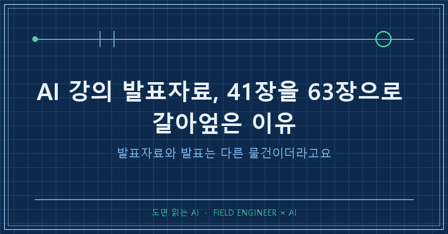
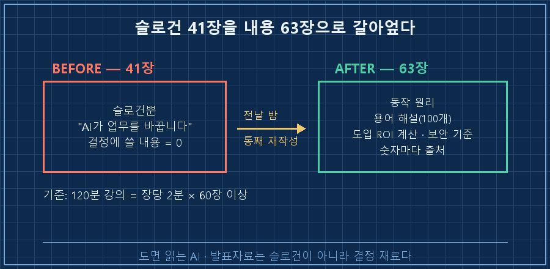
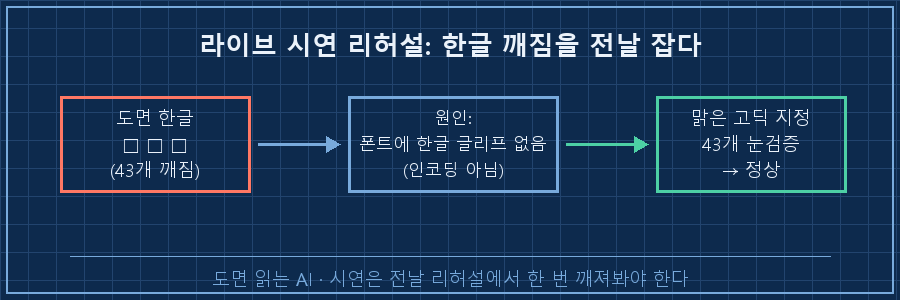
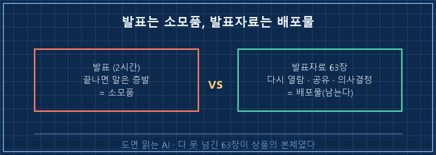

결론부터 말하면, 첫 AI 강의 발표자료를 만들면서 승부는 말솜씨가 아니라 손에 남는 자료에서 갈렸어요.
여러분은 돈 받고 남 앞에서 말해본 적 있으세요?
저는 얼마 전에 인생 처음으로 해봤습니다.
지방의 한 제조기업 경영진 앞에서, 2시간짜리 유료 AI 강의를요.
저는 15년차 제어 엔지니어예요.
수소 설비 제어판넬 설계하고 PLC 로직 짜는 게 본업이고요.
그런 공대오빠가 강사라니.. 저도 어색했는데, 막상 준비해보니 AI 강의 발표자료를 어떻게 짜느냐가 강의의 8할이더라고요.
그 시행착오를 그대로 기록하고 공유하려 합니다!
1. 발표 전날 밤, 41장을 통째로 갈아엎었어요
원래 발표덱은 41장이었어요.
나름 깔끔하게 뽑았다고 생각했는데, 전날 다시 보니 문제가 보이더라고요.
좋은 재료를 잔뜩 모아놓고 전부 슬로건 한 줄로 눌러버린 거예요.
"AI가 업무를 바꿉니다" 같은 문장, 듣는 순간엔 그럴듯한데 경영진이 뭔가 결정할 때 쓸 수 있는 내용이 하나도 없잖아요.
그래서 전날 밤에 다 갈아엎었습니다.
동작 원리 다시 살리고,
용어 해설 붙이고,
도입 비용 계산에 보안 기준까지 복원하고.
그렇게 41장이 63장이 됐어요.
120분 강의면 장당 2분만 잡아도 60장은 필요하다는 계산도 있었고요.
용어는 100개 가까이 정리하면서 영어 원문에 한글 발음까지 달았어요.
RAG = 리트리벌 오그멘티드 제너레이션 (검색해서 근거를 붙이는 방식)
파인튜닝 = 파인 튜닝 (모델을 내 데이터로 미세 조정)
할루시네이션 = 할루시네이션 (AI가 그럴듯하게 지어낸 거짓말)이렇게 발음까지 읽을 줄 알아야 질문이 들어와도 버티거든요.
숫자 들어간 슬라이드엔 출처도 전부 달았어요. 출처 모르는 숫자가 제일 위험하니까요.
마지막으로 슬라이드마다 대본을 붙여서 63페이지짜리 스크립트 문서도 따로 뽑았습니다.
무대 경험이 없으니 애드립 대신 대본으로 버티자는 계산이었죠.

2. 리허설에서 도면 한글이 전부 네모로 깨졌어요
강의 하이라이트로 라이브 시연을 준비했어요.
AI한테 말로 시켜서 설비 외형도 CAD 도면을 그 자리에서 뽑아내는 거요.
정면도, 측면도, 치수, 표제란까지 들어간 도면 파일이 몇 분 만에 나오는 장면이에요.
근데 전날 리허설에서 도면의 한글이 전부 네모로 깨져 나왔어요.
[리허설] 설비 외형도 자동 생성 → 표제란·치수 확인
정면도 표제란 : □□□ □□□ □□□
치수 텍스트 43개 → 전부 네모(□)로 깨짐
원인 : CAD 기본 폰트에 한글 글리프 없음 (인코딩 문제 아님, 폰트 문제)
조치 : 맑은 고딕 폰트 지정 후 재생성 → 텍스트 43개 눈으로 재확인원인을 파보니 CAD 기본 폰트가 영문 전용이라 한글 글자 자체가 없는 거였어요. 인코딩이 아니라 폰트 문제요.
맑은 고딕을 쓰도록 고치고,
다시 뽑고,
텍스트 43개를 눈으로 전부 확인하고 나서야 잠들었습니다.
리허설 안 했으면 이 장면을 경영진 앞에서 생방송으로 봤겠죠..

3. 실전 2시간, 63장을 다 못 넘겼어요
당일 강의는 솔직히 절반의 성공이었어요.
63장을 2시간에 다 못 다뤄서 중간중간 걸러가며 넘겼거든요. 시간 배분 설계를 제대로 안 한 대가예요.
2시간이 길 줄 알았는데 막상 서보니 순식간이더라고요.
앞에서 개념 설명에 시간을 넉넉히 쓴 게 뒤로 갈수록 부메랑이 됐고요.
질문 대응 원칙은 하나만 정해뒀어요.
모르는 건 모른다고 말하기.
그 자리에서 추측으로 답하는 게 제일 위험하니까요.
라이브 시연은 다행히 잘 됐습니다!
제 PC에 쌓아둔 지식 문서 512개를 AI가 실시간으로 검색해서 답하는 장면,
그리고 도면이 즉석에서 그려지는 장면에서 반응이 제일 좋았어요.
슬라이드 속 남의 사례가 아니라 눈앞에서 돌아가는 실물이었으니까요.
4. 그런데 다 못 넘긴 63장이 신의 한수였어요
끝나고 곱씹어보니 재밌는 결론이 나왔어요.
발표에서 다 못 다룬 63장이 실패가 아니라, 이 강의에서 제일 잘한 일이었다는 거예요.
교육생들이 정말 원한 건 제 말솜씨가 아니라 손에 남는 자료였거든요.
강의가 끝나면 말은 증발해요. 근데 63장짜리 덱은 남잖아요.
나중에 다시 열어보고, 회사에 공유하고, 결정할 때 참고할 수 있는 재료요.
발표는 2시간짜리 소모품이고, 자료는 계속 남는 배포물이에요.
그렇게 보면 다 못 다룰 만큼 만든 게 과잉이 아니라 상품의 본체였던 거죠.

5. 벼락치기 암기는 무대에서 티가 나요
물론 실패한 것도 그대로 적을게요.
용어 100개를 발음까지 정리해놓고도, 그게 암기였지 이해가 아니었어요.
예상 질문 안에서는 멀쩡했는데, 소화가 덜 된 개념은 설명이 얕아지는 순간들이 있었어요.
자료에 적힌 문장을 다시 읽어주는 수준으로요.
15년 동안 설비는 원리부터 파고들었으면서 AI 용어는 벼락치기로 때웠으니.. 그 대가를 무대 위에서 치렀습니다.
이건 자료로도 못 가려요.
다음엔 용어집 만드는 데서 안 멈추고, 개념 하나하나를 제 설비 업무에 직접 대입해보면서 소화할 생각이에요.
PLC 배울 때 매뉴얼 외운 게 아니라 결선하고 태워먹으면서 익혔던 것처럼요.
자주 묻는 질문 (FAQ)
Q1. 발표자료는 몇 장이 적당한가요?
장수보다 시간이 기준이에요. 저는 120분에 장당 2분으로 잡아 60장을 뽑았어요. 다만 다 못 넘길 각오로 넉넉히 만드는 걸 권합니다. 남는 건 배포물이 되니까요.
Q2. 라이브 시연, 꼭 해야 하나요?
반응은 시연이 압도적이었어요. 남의 사례 슬라이드보다 눈앞에서 돌아가는 실물이 세거든요. 단 반드시 전날 리허설에서 한 번 깨져보고 들어가세요. 저는 리허설에서 한글 깨짐을 잡았습니다.
Q3. 강의 용어 준비는 어디까지 하나요?
영어 원문 + 한글 발음 + 한 줄 뜻까지가 최소예요. 근데 발음만 외우면 예상 밖 질문에서 티가 납니다. 암기 말고 내 업무에 대입해 이해하는 게 진짜 준비예요.
다음에 AI 강의 준비할 때 쓸 체크리스트
- [ ] 슬로건 슬라이드 → 동작 원리·용어·ROI·보안으로 내용 복원
- [ ] 용어집: 영어 원문 + 한글 발음 + 한 줄 뜻 (그리고 내 업무에 대입)
- [ ] 숫자 슬라이드마다 출처 표기
- [ ] 슬라이드별 대본(스크립트) 별도 문서화
- [ ] 라이브 시연은 전날 리허설에서 1회 깨뜨려보기
- [ ] 시간 배분: 앞부분 개념 설명 과욕 금지 (뒤가 부메랑)
첫 유료 강의에서 배운 건 세 가지예요.
자료는 발표 못 하고 남을 만큼 두껍게 만들 것,
라이브 시연은 반드시 리허설에서 한 번 깨져볼 것,
용어는 암기가 아니라 내재화될 때까지 파둘 것.
저처럼 현장에서 일하다 AI를 실무에 굴리는 이야기, 그리고 도면·PLC를 AI와 함께 다루는 기록을 [makefield.ai](https://makefield.ai)에 모으고 있어요.
다음 글에서는 그 라이브 시연 준비 과정, 그러니까 AI한테 CAD 도면을 그리게 만드는 얘기를 따로 풀어볼게요.
혹시 여러분은 말 잘하는 강사와 자료 두꺼운 강사 중 어느 쪽이 기억에 남던가요?
---
태그: #AI강의발표자료 #AI강의준비 #경영진AI교육 #AI강의후기 #AI라이브시연 #AI발표자료만들기 #현장엔지니어 #제조업AI #강의준비팁 #RAG #AI교육자료 #PPT발표자료 #강의후기 #AI실전 #도면읽는AI